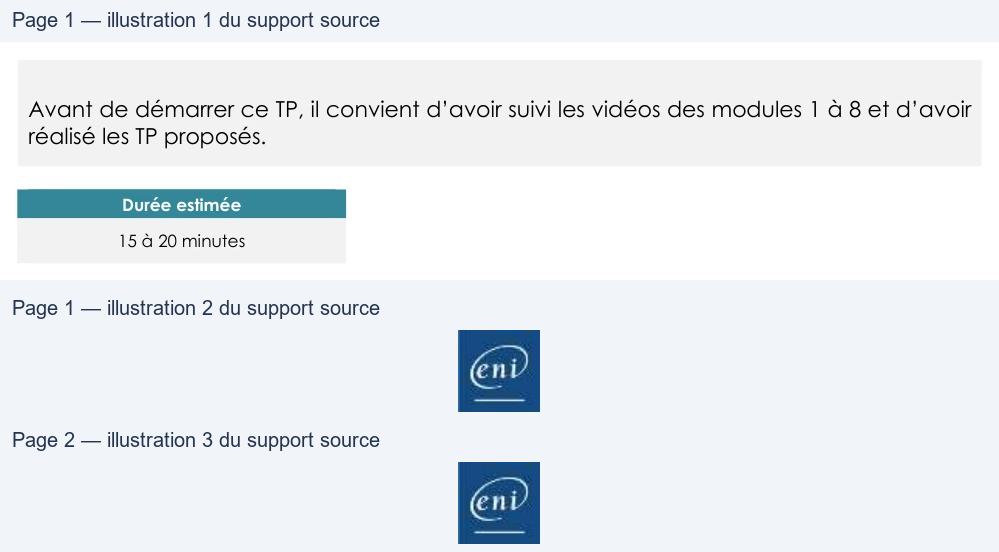

Transcription du document du Drive TSSR. La mise en forme est adaptée au Web ; les compléments IA du portail sont présentés séparément.
Administration Debian GNU/Linux
TP du Module 08 – Gestion des espaces de stockage avancée - LVM
Avant de démarrer ce TP, il convient d’avoir suivi les vidéos des modules 1 à 8 et d’avoir
réalisé les TP proposés.
Durée estimée
15 à 20 minutes
I.
Gestion des disques sur la station avec environnement
graphique
•
Ajouter un nouveau disque de 40 Go.
o Vérifier que le disque est bien présent dans /dev
•
Créer 1 partition sur le nouveau disque avec fdisk :
o Partition principale de la totalité du disque pour du LVM
•
Intégrer la partition au groupe de volume présent dans votre système.
•
Créer un volume logique de 20 Go nommé lvvar.
•
Agrandir le volume logique lvhome avec le reste de l’espace disponible du groupe
de volume.
II.
Astuce
Pour détecter les disques SCSI sans redémarrer :
•
Trouver la chaine SCSI qui gère les disques avec la commande :
o # udevadm info --query=path --name=sda
o Ex. résultat : /devices/pci0000:00/0000:00:10.0/host0/target0:0:0/0:0:0:0/block/sda
o Cela veut dire que host0 gère les disques SCSI
Page 1/2
© ENI – Tous droits réservés
BE
Administration Debian GNU/Linux
•
Lancer un scan de la chaine SCSI
o # echo "- - -" > /sys/class/scsi_host/host0/scan
Une solution est proposée pour ce TP sous la forme d'un PDF commenté, disponible dans les
ressources à télécharger.
Page 2/2
© ENI – Tous droits réservés
